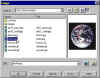
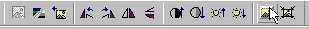
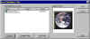
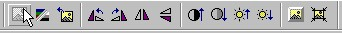
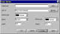
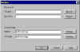

|
| ||
|
| ||
Hover buttons in FrontPage 98 life to your Web pages so that when a user "hovers" over a Hover Button or clicks on it, the button will change colors, change shape, or animate any way you choose. The Hover Button feature in FrontPage 98 creates a small Java™ applet for you.
The first step in creating cool Hover Button images is to use good stock images. If you already have decided on an image for the button in its unselected state, as well as an image for the button while it is being hovered over, you may skim the first few paragraphs of instructions below.
Original images may be created via a scanner, digital camera, or another TWAIN compliant device. You may also create images using image files from your desktop, from the FrontPage 98 Clipart gallery, or from the Web. Once you have selected suitable images and added them to your current FrontPage 98 Web (using the Import command from the FrontPage Explorer File menu), insert it into your page by clicking on the Insert Image button on your toolbar and locating your image.

Click image to enlargeOnce you have inserted the image on your Web page, select it. If the Images toolbar isn't already visible, it will appear upon selection of the image. FrontPage 98 offers new image editing tools to enhance your images. For example, you may automatically washout images, rotate, bevel, crop, and more. For this example, choose the bevel image tool in order to bevel the image's borders.

After you've beveled the image, save the modified image to your FrontPage 98 Web. Do this by clicking on the Save button on the toolbar. When prompted to Save Embedded Files, select the image in the list and rename it by clicking on the Rename button. This is very important if you want to preserve your original image. Click OK.

Click image to enlargeNext, reselect your beveled image on your page and choose to "fade" the image using the Washout tool on the Image tool bar...

Now, save the page with the washed out image by once again clicking the Save button on the toolbar. Again, rename the washed out image file so that it doesn't replace the original beveled image in your Web.
Next, select and completely delete the image from your Web page. [Note: If you already had "before" and "after" images that you plan on using for your Hover Button image skip the below steps of modifying and saving the images.] already had images, we could have skipped the previous steps of modifying and saving the images.
Now to use images to create a Hover Button on your page, choose Insert: Active Elements: Hover Button. First, fill in the URL of the page to which you want your Hover Button to link, and then specify the height and width for the Hover Button on your Web site page (which should correspond to the height and width of the custom images being used for your Hover Button). Then, click on the custom button to continue setting up your Hover Button.

Click image to enlargeIn the Custom dialog, enter the names of your "before" and "on hover" images, and for the Hover Button and click OK.

Click image to enlargeYou have now finished creating your first Hover Button using custom images! To view your new Hover Button, click on the Preview tab at the bottom of the FrontPage Editor window. Once your page appears, hover over the button you have created to see its effect.
Did you find this material useful? Gripes? Compliments? Suggestions for other articles? Write us!
© 1999 Microsoft Corporation. All rights reserved. Terms of use.